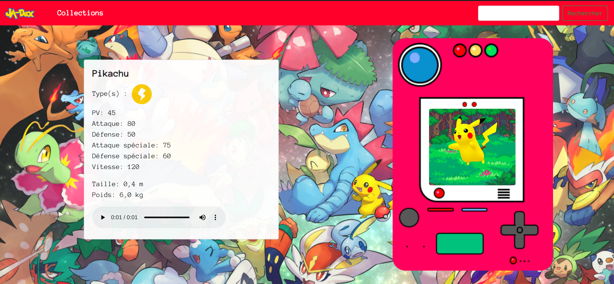
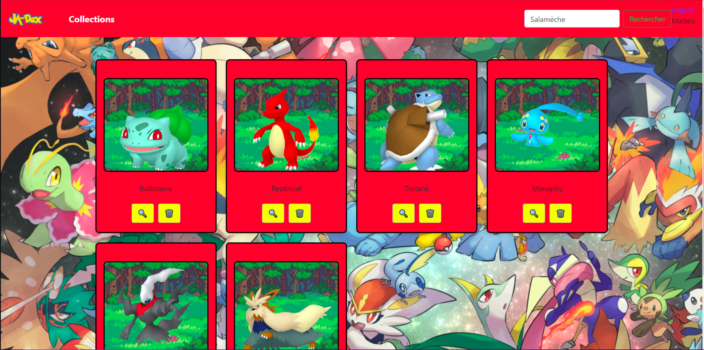

JA-Dex
JA-Dex is a collaborative project by a team of 4 as part of the IUT. The goal of the project is to create a website that provides all the necessary information about a given Pokémon and allows users to add it to a Pokémon collection.
It has several pages:
- The home page
- The "pokedex" page
- The collection page
- Login page
On the home page, there is a search bar that allows users to choose a Pokémon from all generations to find its statistics.
The information page is the next step after the home page, providing details about the chosen Pokémon, including:
- Its type(s)
- Its hit points
- Its attack
- Its defense
- Its special attack
- Its special defense
- Its height (in meters)
- Its weight (in kilograms)
- And its cry
The collection page is used to store (bookmark) several selected Pokémon. It is only accessible when the user is logged in.

(home page)

(information page)

(collection page)